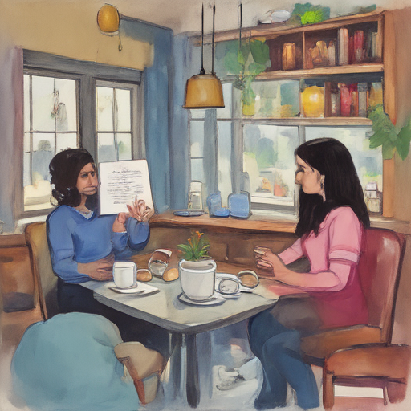

Today, I found myself sitting in a cozy café with Aditya Chakrabortty and Katie Zacharia. We were discussing the recent abuse scandal at a prestigious tech company over steaming cups of coffee. The conversation was enlightening, yet heavy, as we explored the ripple effects on employees' mental health and career paths. It felt like an important time to share our voices and raise awareness.

Keywords: Aditya Chakrabortty, Katie Zacharia, Child sex abuse charges
Fictional diary entry.